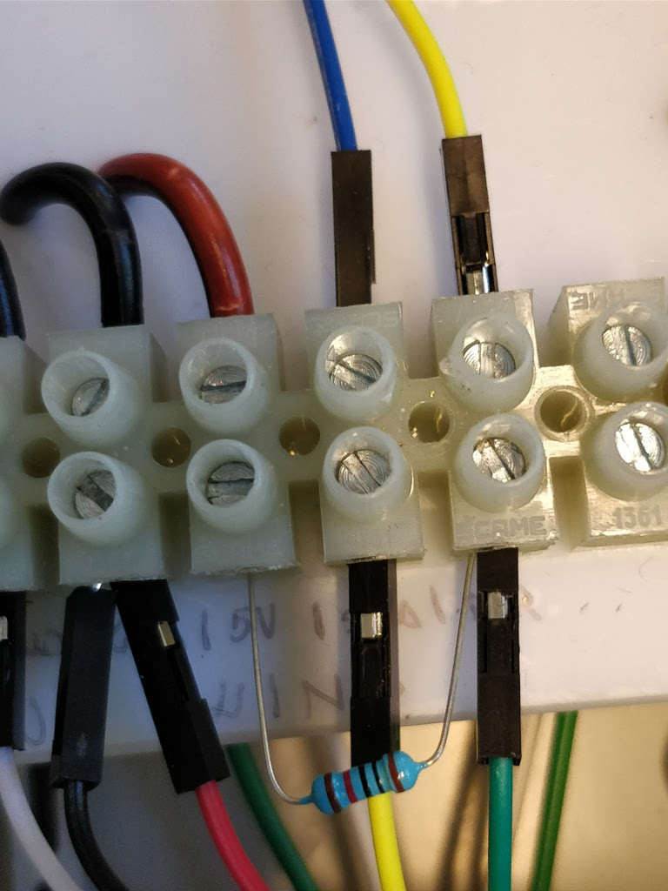

Sensor instruction¶
Now, we are going to prepare the connections between the control unit and the sensors. The image below can help you in the hookup of the sensors.
DS18B20¶
The temperature sensor usually comes with a cable length of about 90 cm. You may need to extend the calble to fit to the distance between the main box installation and the place where you will install the temperature sensor. We generally extend it with a 1.5 meter cable by soldering.
From DS18B20 to connector:
- GND (black) –> M05 (black)
- VIN (red) –> M06 (red)
- DATA (blue or yellow) –> M07 (blue) –> D9 (Arduino PIN)
BME280¶
This sensor uses the I2C (link) connection. It needs 5V as input voltage. Use a 4 core cable to connect the sensor breakout board and the control unit.
From BME280 to connector:
- GND (black) –> M09 (black)
- 5V or VIN or VCC (red) –> M10 (red)
- SDI or SDA (green) –> M11 (green) –> SDA (Arduino PIN)
- SCK or SCL (white) –> M12 (white) –> SCL (Arduino PIN)
BH1750¶
This sensor uses the I2C connection. Use a 4 core cable to connect the sensor breakout board and the control unit.
From BH1750 to connector:
- GND (black) –> M15 (black)
- 5V or VIN or VCC (red) –> M16 (red)
- SDI or SDA (green) –> M13 (green) –> SDA (Arduino PIN)
- SCK or SCL (white) –> M14 (white) –> SCL (Arduino PIN)
RAIN COLLECTOR¶
The rain sensor DAVIS Aerocone 6465 has a RJ11 connector. If you do not have an adapter cut it and prepare the connection as follow.
From Davis AeroCone to connector (terminal block barrier):
- DATA1 (red) –> M20 (black)
- DATA2 (green or yellow) –> M19 (blue) –> D2 (Arduino PIN)
Note
The rain collector needs a 47 Ω resistor between the data (green or yellow) and the VIN (red) input connector of the M22.
ANEMOMETER¶
The anemometer, which is composed by wind direction and speed, has the following pinout from anemometer to terminal block barrier:
- GND and 5V (black and red) –> M21 (black)
- speed data (yellow) –> M24 (blue) –> D3 (Arduino PIN)
- direction data (green) –> M23 (yellow) –> A0 (Arduino PIN)
Note
The wind direction needs a 10 kΩ resistor between the data (green) and the VIN (red) input connector of the M22. The wind speed needs a 47 Ω resistor between the data (yellow) and the VIN (red) input connector of the M22.
|  |
Go to istSOS configuration

{kind=link}
{kind=link}
{kind=link}
{kind=link}
{kind=link}